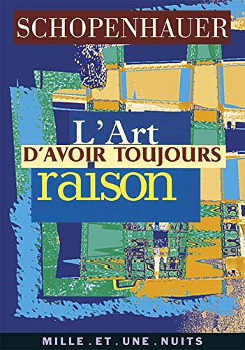
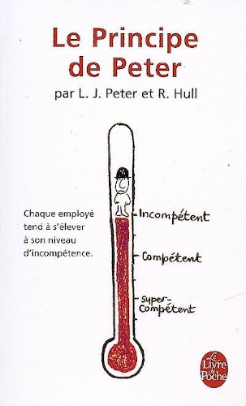

Comme je vous en raconte tellement et que les paroles s'envolent....
Je vais vous laisser quelques recommandations pour combler certaines lacunes.
Si, si, il faut combler. Parce que le chewing-gum des yeux (tous les écrans) ne suffit pas à élargir votre empan de connaissances.
Mes recommandations seront d'ordre littéraires, musicales, cinématographiques, artistiques, culinaires et au gré de nos conversations.
Feux d'artifices
7 heures avant le passage à la nouvelle année, je suis devant mon écran d'ordi, rien de spécial. Puis je regarde par la baie vitrée et là je reste bouche bée. Je me suis toujours moqué des couchers de soleil et de ceux qui en faisaient des images, mais là j'ai pas pu m'en empêcher, un 31 décembre avec une delta t de prés de dix degrès et ces nuages comme s'ils étaient en feu... Pas besoin de pétards et de feux d'artifices pour passer vers de nouvelles années qui vont bien chauffer.
La harissa
On ne pourra plus se moquer des tunisiens à cause de leur harissa car elle vient d'être reconnue comme patrimoine immuable de l'humanité. Parfait, ça donnera encore plus de goût à mes mergez et mon couscous.
Bela Lugosi's Dead (Bauhaus)
Les vampires existent, ils ne vous laissent pas la marque de leurs canines sur le cou, c'est juste une impression. Comme si vous aviez perdu votre temps avec quelqu'un qui ne vous a rien apporté. Quelqu'un qui vous a pris de votre temps pour que lui-même existe. Souvenez-vous, vous n'avez que le temps de votre vie et qu'une seule vie.
Le singe nu (Desmond Morris)
Un jour, excédé par le comportement de mes semblables, les dictats de la mode et autres imbécilités de nos sociétés, j'ai dit : 'On aurait jamais dû perdre nos poils'. L'ami à qui je venais de dire cela s'est levé, a pris ce livre sur une étagère de sa bibliothèque et me l'a tendu en me disant : 'C'est bon pour ce que tu as'.
Dashiell Hedayat (Chrysler)
Quand cette chanson est sortie, j'étais trop jeune pour l'apprécier. Aujourd'hui, je ne sais pas pourquoi (à d'autres) mais elle me rappelle mes premiers amours et les galères pour trouver un endroit tranquille.
Peugeot PK65 Lady
C'est le dernier vélo qui trônait dans mon salon en attendant de se faire restaurer. Quand le soleil caressait sa peinture nacrée, je me retrouvais sur les routes de campagne les cheveux au vent (oui j'en ai eu un jour).
Good (Morphine)
Je t'en avait parlé, une basse avec deux cordes et un bottleneck pour les slides, une batterie, un sax et roule ma poule pour le groove. Profite de tout l'album c'est une pépite de grande valeur.
Tampopo (Jūzō Itami)
Si après avoir vu ce film tu prends un billet pour aller manger un ramen à Tokyo, je viens avec toi.
L'amateur de cuisine (Jean-Philippe Derenne)
Je sais que tu finiras par regretter d'avoir cédé aux avances de l'affreux Ronald. Je le sais (discute pas et enlève tes coudes de la table). Ce jour-là ton intelligence et ton corps te réclameront une nourriture plus qualitative et variée. J'ai ce qu'il te faut pour ta nouvelle vie. Un livre écrit par un médecin qui t'explique tout (ou presque) ce que tu dois savoir pour bien manger. (Attention c'est pas pour faire des pâtes au ketchup).
Dancing Bacons
J'aime bien manger et cuisiner. J'aime aussi regarder la street food. Mais pas celle de youtubeurs braillards soucieux de montrer leur tronche. Un jour je tombe sur une vidéo de Dancing Bacons, la vidéo est intéressante, le son c'est l'ambiance du lieu où elle se trouve, tout est cool. Puis vient la dégustation... Là je vous conseille d'en regarder plusieurs afin de sentir les nuances.
Allah hoo (Sain Zahoor)
Je voulais vous présenter un autre chanteur pakistanais et par curiosité (retiens ce mot il est bon pour ce que tu as) j'ai cliqué sur son lien. Depuis je sais que je vivais dans les ténèbres. Evidemment pour tes esgourdes aseptisées ça risque de piquer là encore. Mais "No pain, no gain".
L'Art d'avoir toujours raison (Arthur Schopenhauer)
Ce cher Monsieur va vous faire gagner un maximun de temps. Il vous propose de ne parler qu'avec des gens intelligents. Ceux qui recherchent la vérité et sont assez humbles pour reconnaître qu'ils peuvent se tromper. ça nous fait plus grand monde hein ?. (Clin d'oeil à la blague "Vous avez raison").

Monterey (Tim Buckley)
C'est pas facile d'accès mais ça vaut vraiment la peine. Parti trop tôt il nous a légués 9 albums.
Le principe de Peter
Après avoir lu ce livre tu sauras pourquoi c'est toujours un âne qui est chef (pas tous). Tu y apprendras aussi qu'il ne faut pas accepter toutes les promotions et comment les éviter sans les refuser.

I feel so good (JB Lenoir)
Je vous présente cette vidéo même si la qualité laisse à désirer et si elle n'est pas complète. Ce grand artiste a vécu pendant la ségrégation et qu'il est mort de l'injustice de cette époque. Allez écouter Down to the Mississipi, Vietnam (album Passionate blues) et tant d'autres.
Les anguilles de Maîté
Cela se passe dans les trois premières minutes, puis Maîté dit triomphalement "Un amusement". Je n'en dis pas plus, En trente ans les moeurs ont tellement changé que je suis sûr que ça ne passerait plus à la télé.
Oh Western Wind (Asaf Avidan & The Mojos - Through the Gale)
Comparée au reste de ses compositions cette chanson dénote et pourtant sa mélancolie apaise un peu la mienne.
Le monde d'Apu (Satyajit Ray)
C'est une trilogie, La Complainte du sentier (1955), l'Invaincu (1956) et le Monde d'Apu (1959). Là, comme beaucoup d'autres films dont je vous parlerai, les commentaires sont superflus. C'est des "a must-see" et puis c'est tout.
Le traité des cinq roues (Miyamoto Musashi)
Ce samouraï qui a vécu dans le Japon médiéval (1645) est mort paisiblement dans son lit. Mais avant de partir il s'est retiré du monde et a rédigé ce traité où il nous livre ses techniques. Techniques simples mais efficaces. Qui vont de la construction d'une charpente de maison au combat contre un adversaire, un groupe voire une armée.
Tout est stratégie et il faut vous affûter tous les jours.